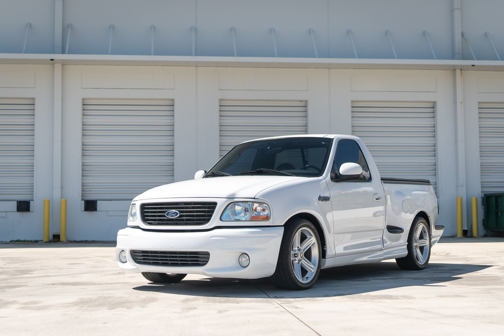
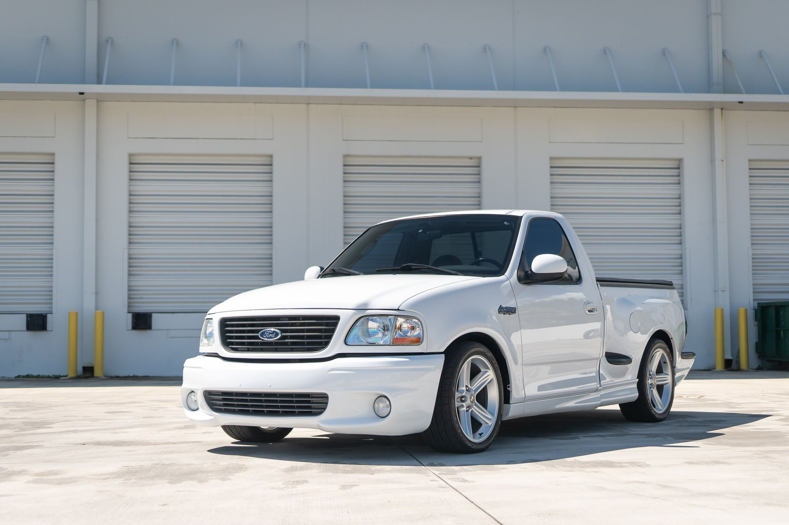

The Best Car: It's All About You
 

When it comes to cars, the concept of "the best" is entirely subjective. There isn't one single vehicle that universally outperforms all others, because what constitutes "best" depends entirely on your individual needs, preferences, and lifestyle.
For one person, the best car might be a compact electric vehicle that offers the lowest running costs for a short daily commute and zero emissions. For another, it could be a spacious hybrid SUV that comfortably fits a family, provides excellent fuel economy for road trips, and handles diverse weather conditions. Someone else might define the best car as a reliable gasoline-powered sedan that offers a balance of affordability, practicality, and proven longevity for their daily work.
Ultimately, the "best car" for you is the one that most effectively meets your specific requirements. This means carefully considering factors like your daily routine (how far and where you typically drive), your need for passengers and cargo space, your overall budget for purchase, running costs, and maintenance, your preferred driving style (whether you value a smooth, quiet ride or something more responsive and agile), your environmental concerns regarding emissions, and your long-term ownership plans. By evaluating these key aspects of your life and driving habits, you can confidently identify the car that isn't just "good," but truly "the best" for you. Our goal on this website is to provide you with the comprehensive information needed to make that informed decision, ensuring you drive away with satisfaction for years to come.